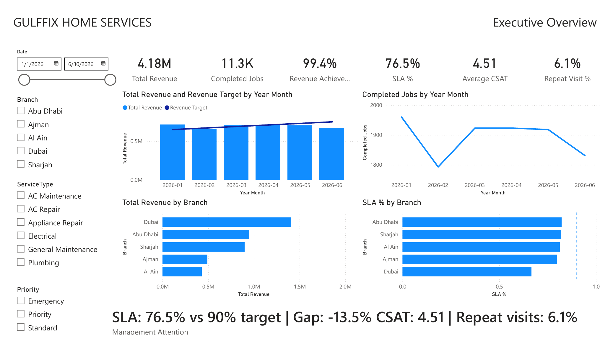
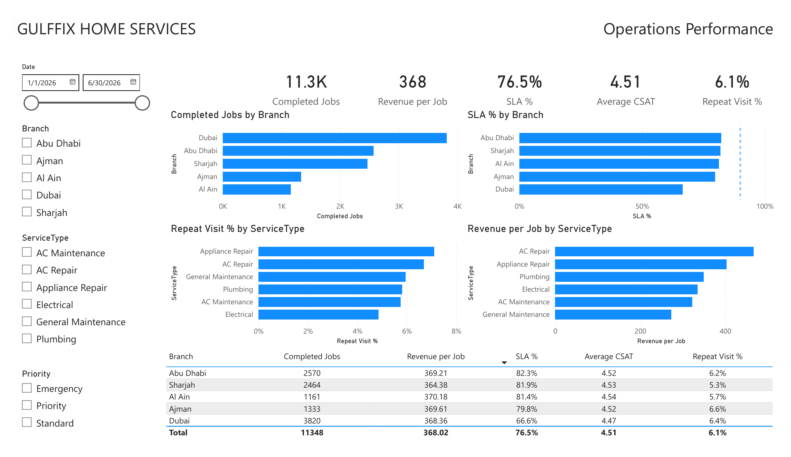
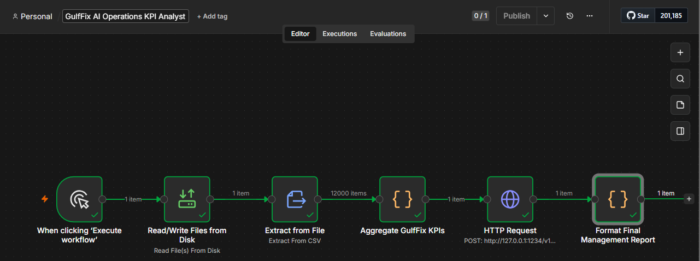

Case study · Power BI · n8n · Local AI
GulfFix
Operations Intelligence
A two-stage operations product: first make performance visible in Power BI, then turn the verified KPIs into a concise management report automatically.
Make operational performance easy to act on.
The dashboard turns service data into a management conversation. Instead of asking someone to search through rows of information, it makes the performance gap visible by location and service type.
Revenue, achievement against target, SLA performance, and a clear management-attention signal.
Location-level SLA comparison and service-level patterns that reveal where performance is strongest and weakest.
The design prioritizes the story behind the KPI—not just a collection of charts.
Three screens.
One clear story.
These are the actual project outputs: the two Power BI pages that surface the operational signal, followed by the n8n workflow that turns the signal into a management-ready report.



Dubai is the first place to investigate.
I designed the data model, KPI measures, target comparisons, month sorting, revenue mapping, SLA target line, management-attention logic, and the two-page executive/operations layout.
Evidence first.
Explanation second.
The same job-level CSV then flows through n8n. Critical metrics are calculated deterministically before the verified facts are sent to a local Llama model through LM Studio.
Operations Improvement for Dubai
Priority: Dubai at 66.6% SLA, 23.4 points below the 90% target.
Patterns: Abu Dhabi leads Dubai by 15.7 SLA points. Appliance Repair has the highest repeat visits at 7.1%.
Actions: Review Dubai's workflow, monitor SLA weekly, and investigate Appliance Repair repeat visits.
Source: synthetic portfolio dataset · 1 Jan–30 Jun 2026